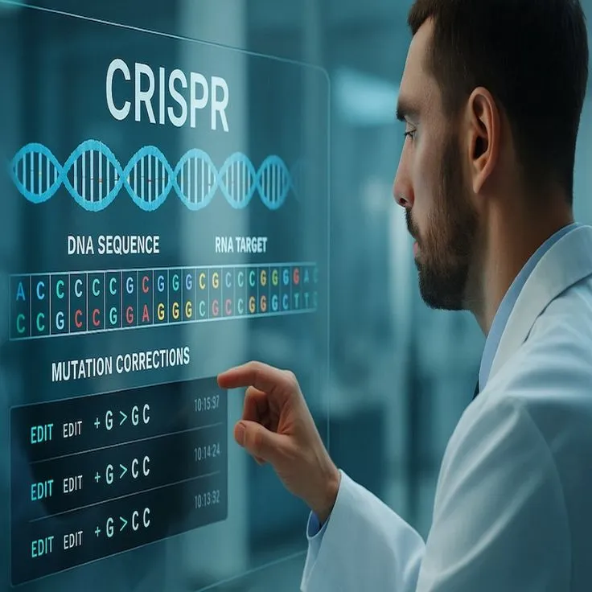

Accelerating breakthroughs in biotechnology through advanced CRISPR screening, genomic analysis, and next-generation safety assessment solutions.
Explore Platform →Our laboratory is dedicated to bridging the gap between scientific theory and practical application.


Partnering with global institutions and private sector leaders.
Learn More ↗Each research field is supported by expert teams and cutting-edge technologies, ensuring precision, innovation, and real-world relevance. Our work is rooted in curiosity, driven by data, and designed to deliver meaningful impact.
Applying biological systems and organisms to advance healthcare innovation.
Investigating the properties and applications of advanced materials.
Assessing the impact of substances through rigorous scientific testing.
Applying scientific methods for advanced laboratory investigations.
At our core, we are dedicated to advancing scientific understanding through purposeful research tailored to address today's most pressing challenges.
Contact UsWe offer advanced testing services across a wide range of scientific disciplines, delivering accurate validated results.
From hypothesis to execution, we craft tailored research strategies aligned with scientific best practices.
Translating complex datasets into clear, actionable insights backed by clarity.
We work closely with academic institutions, industries and government agencies.

Trusted by organizations, institutions, and researchers worldwide.
Our process is built on clarity, accuracy, and scientific rigor. From the moment a sample arrives at our lab, it goes through a carefully managed workflow.
Define your research goals, timeline, and scientific requirements.
We've compiled answers to the most common questions about our laboratory services, research process and scientific capabilities.
View All FAQs ↗